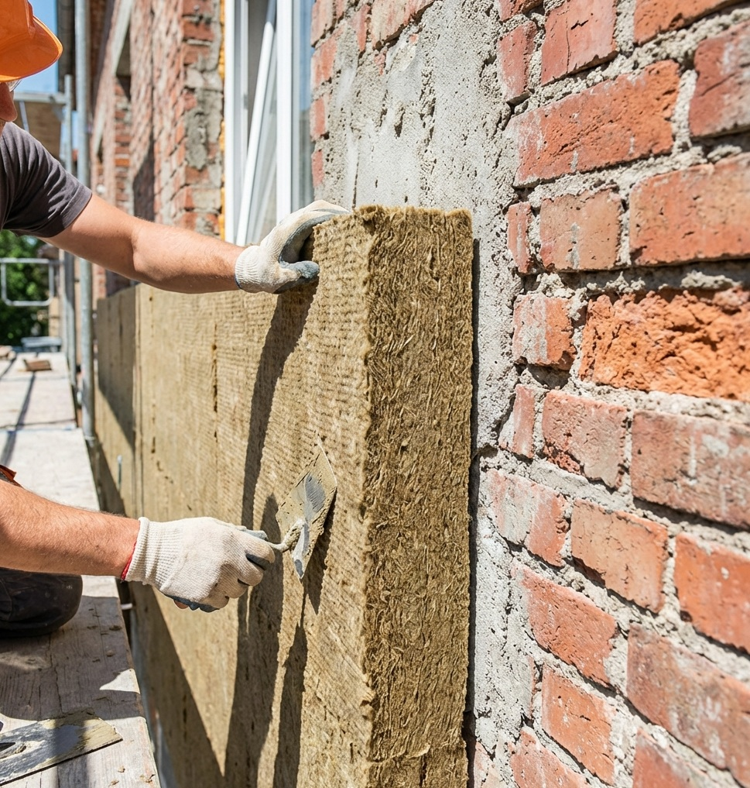

Kamena vuna vs. stiropor EPS: Zašto struka uvijek bira vunu?
Objavljeno: 22. Siječanj 2026. | Autor: 2LMF PROKada se krene u energetsku obnovu ili gradnju kuće, jedno od najčešćih pitanja investitora je: "Hoćemo li staviti stiropor EPS ili kamenu vunu?"
Činjenica je da je stiropor u startu jeftiniji materijal. No, fasada se ne radi za jednu ili dvije sezone; ona se radi jednom u 30 godina. Kada taj trošak podijelite na desetljeća korištenja, razlika u cijeni postaje zanemariva, a razlika u kvaliteti života – ogromna.
U 2LMF PRO uvijek savjetujemo klijentima da gledaju dugoročno. Evo 4 ključna razloga zašto je kamena vuna superioran izbor za vaš dom.
1. Sigurnost na prvom mjestu: Vuna ne gori!
Ovo je argument broj jedan. Kamena vuna spada u klasu negorivosti A1. Ona se proizvodi od vulkanskih stijena (bazalta) i tali na temperaturama iznad 1000°C.
U slučaju požara, stiropor se topi i može ispuštati dim, dok kamena vuna djeluje kao protupožarna barijera koja sprječava širenje vatre. Kada obučete kuću u vunu, doslovno ste joj navukli vatrogasno odijelo. To je sigurnost koja nema cijenu.
2. "Kuća mora disati" (Paropropusnost)
Često čujete izraz da kuća mora "disati". To ne znači da vjetar puše kroz zidove, već da vlaga iz unutrašnjosti (od kuhanja, tuširanja, disanja) može izaći van.
- Stiropor EPS je paronepropustan. On zatvara kuću slično kao plastična vrećica. Ako ventilacija nije savršena, ta vlaga ostaje unutra i stvara idealne uvjete za gljivice i plijesan.
- Kamena vuna je visoko paropropusna. Ona dopušta vlagi da prođe kroz zid i izađe van, čime se drastično smanjuje rizik od kondenzacije i plijesni u interijeru.
3. Zvučna izolacija i trajnost
Stiropor je vrlo lagan materijal i loš zvučni izolator. Kamena vuna je gusta, vlaknasta i teška. Ona fizički "upija" zvučne valove, stvarajući oazu mira u vašem domu. Također, dimenzijski je stabilna – ne širi se i ne skuplja na ekstremnim temperaturama.
Usporedba materijala
| Karakteristika | Stiropor EPS | Kamena Vuna |
|---|---|---|
| Protupožarnost | Gori (E klasa) | Negoriva (A1 klasa) |
| Paropropusnost | Niska | Visoka (Zid diše) |
| Zvučna izolacija | Slaba | Izvrsna |
Ima li stirodur (XPS) ikakvu svrhu?
Apsolutno! Iako za zidove preporučujemo vunu, za podnožje kuće (sokl) – onaj donji dio koji dodiruje tlo – obavezno koristimo XPS (stirodur). Kamena vuna ne smije povlačiti vlagu iz tla, dok je XPS potpuno vodootporan i tvrd.
Dakle, idealna kombinacija koju projektiramo u 2LMF PRO: XPS u zoni prskanja kiše i tla, a sve iznad toga – kvalitetna kamena vuna.
Zaključak
Fasada od kamene vune je inicijalno skuplja investicija, ali nudi sigurnost, zdraviju mikroklimu i mir. Ako gradite kuću za sebe i svoju obitelj, kamena vuna je jedini beskompromisan izbor.
Zašto je izvedbeni projekt ključ uštede, a ne samo dodatni trošak?
Objavljeno: 19. Siječanj 2026. | Autor: 2LMF PROMnogi investitori i vlasnici kuća često postavljaju pitanje: "Ako već imam glavni projekt i građevinsku dozvolu, zašto bih plaćao još i izvedbeni projekt?". Na prvi pogled, to izgleda kao nepotreban trošak. Međutim, iskustvo s terena pokazuje upravo suprotno – izvedbeni projekt je alat koji vam štedi novac.
Razlika između "papira" i stvarnosti
Glavni projekt je dokumentacija za birokraciju; njegova svrha je zadovoljiti zakone i dobiti dozvolu. On često ne sadrži detalje spojeva, točne sheme polaganja izolacije ili precizne mjere za narudžbu materijala. Tu nastupa izvedbeni projekt.
Bez njega, majstori na gradilištu su prisiljeni improvizirati. A improvizacija u gradnji uvijek košta – bilo kroz višak materijala, bilo kroz naknadne popravke.
Točna narudžba materijala = Manji trošak
Kod skupih materijala kao što su HPL ploče, vlaknocement ili debele TPO folije, svaka pogreška u narudžbi se osjeti na novčaniku.
Izvedbeni projekt donosi precizne količine i "krojne liste". To znači da točno znamo kako izrezati ploče ili foliju da imamo minimalan otpad. Umjesto da naručujete 15% više materijala "za svaki slučaj", s dobrim projektom naručujete točno onoliko koliko vam treba. Često samo ta ušteda na materijalu pokrije cijenu samog projektiranja.
Izbjegavanje toplinskih mostova
Najskuplja izolacija je ona koja ne radi svoj posao. Ako detalj spoja prozora i fasade nije nacrtan, majstor će ga izvesti "kako misli da je najbolje". To često dovodi do toplinskih mostova – mjesta gdje toplina curi van, a vlaga ulazi unutra. Izvedbeni projekt rješava te kritične točke na papiru, prije nego što postanu problem na zidu.
Ploče za ventilirane fasade: HPL, vlaknocement ili aluminij – Što odabrati?
Objavljeno: 17. Siječanj 2026. | Autor: 2LMF PROZavršna obloga ventilirane fasade nije samo estetski element; ona je prvi štit vašeg objekta od sunca, kiše i temperaturnih ekstrema. Izbor materijala diktira cijenu sustava, brzinu montaže i, najvažnije, dugovječnost fasade.
U 2LMF PRO nudimo različite vrste ploča, a evo detaljne usporedbe tri najpopularnija rješenja:
1. HPL ploče (High-Pressure Laminate)
HPL ploče su izuzetno izdržljiv materijal sastavljen od kraft papira i smola, prešan pod visokim tlakom.
- Prednosti: Gotovo neograničen izbor dekora (imitacija drva, kamena, metala). Iznimno otporne na udarce i grafite. Male su težine, što olakšava podkonstrukciju.
- Mane: Veći toplinski rad materijala (širenje i skupljanje), zbog čega zahtijevaju preciznu montažu.
- Cijena: Srednji do visoki cjenovni razred, ovisno o debljini i dekoru.
2. Vlaknocementne ploče
Prirodni materijal izrađen od cementa, mineralnih punila i celuloznih vlakana.
- Prednosti: Izrazito prirodan, "betonski" izgled. Potpuno negorive (klasa A1 ili A2), što ih čini najsigurnijim izborom za visoke objekte. Materijal koji s vremenom dobiva autentičan karakter.
- Mane: Teže od HPL i aluminijskih ploča, zahtijevaju robusniju podkonstrukciju. Manji izbor boja u usporedbi s drugim materijalima.
- Cijena: Najčešće najpovoljnija opcija među premium oblogama ventiliranih fasada.
3. Aluminijske kompozitne ploče
Vrhunski materijal koji se sastoji od dva aluminijska sloja s ispunom, poznat po svojoj savršenoj ravnoći.
- Prednosti: Izuzetno lagan, a nevjerojatno čvrst materijal. Omogućuje veliku kreativnost jer se ploče mogu savijati i oblikovati u razne kutove i forme. Otpornost na atmosferske utjecaje je nenadmašna, a izgled je moderan i čist.
- Mane: Osjetljivost na površinska oštećenja (ogrebotine) kod nekih završnih obrada. Zahtijeva specifičan alat za obradu na gradilištu.
- Cijena: Viši cjenovni razred, ali nudi vrhunsku estetiku i dugovječnost.
Zaključak: Što se najviše isplati?
Ako želite moderan izgled obiteljske kuće s toplinom drveta, HPL je nepogrešiv. Za poslovne zgrade i javne objekte gdje je požarna sigurnost prioritet, vlaknocement je standard. Ako gradite objekt koji mora imati savršeno ravne linije i visoku izdržljivost, aluminijski kompozit je najbolja investicija.
Fasada: Klasična (ETICS) ili ventilirana? Vodič za pametan odabir
Objavljeno: 11. Siječanj 2026. | Autor: 2LMF PROKada dođe vrijeme za obnovu fasade ili gradnju novog objekta, većina klijenata se nađe pred dilemom: odabrati provjerenu "klasičnu" fasadu (ETICS) ili investirati u modernu ventiliranu fasadu?
U 2LMF PRO u ponudi imamo sustave za obje vrste fasada. Kako bismo vam olakšali odluku, pripremili smo detaljnu usporedbu prednosti i troškova.
1. ETICS (Kontaktna fasada) – Kraljica omjera cijene i kvalitete
Ovo je sustav koji viđate na 90% obiteljskih kuća. Sastoji se od izolacijskih ploča (kamena vuna ili stiropor) koje se lijepe direktno na zid, armiraju mrežicom i završavaju dekorativnom žbukom.
- Ključne prednosti: Osim što odlično zadržava toplinu zimi, ovaj sustav je "monolitan", što znači da nema prekida izolacije. Izvedba je relativno brza, a izbor završnih boja i tekstura je neograničen.
- Cijena: Ovo je financijski najpovoljnija opcija ("Best Buy"). Cijena materijala je znatno niža jer nema troška aluminijske podkonstrukcije ni skupih završnih ploča.
2. Ventilirana fasada – "Mercedes" među fasadama
Ovaj sustav se smatra premium rješenjem. Ključna razlika je u zračnom sloju između izolacije i završne obloge (HPL, vlaknocement, aluminij).
- Ključne prednosti:
- Ljetni komfor: Zrak koji cirkulira iza ploča odvodi vrućinu ljeti, pa kuća ostaje hladna i bez klima uređaja (efekt dimnjaka).
- Zdravlje zida: Taj isti zrak odvodi vlagu iz zidova, pa je pojava gljivica i plijesni nemoguća.
- Trajnost: Završne ploče su neusporedivo otpornije na tuču i udarce od klasične žbuke.
- Cijena: Radi se o višoj početnoj investiciji (skuplji materijali, profili, sidra), ali s obzirom na to da fasada ne zahtijeva bojanje ni održavanje idućih 50 godina, dugoročno je vrlo isplativa.
Vodič kroz hidroizolaciju: Bitumen ili TPO – Što odabrati?
Objavljeno: 7. Siječanj 2026. | Autor: 2LMF PROVlaga u domu nije samo estetski problem koji uzrokuje mrlje na zidovima. Ona je ozbiljna prijetnja strukturi same građevine, a sanacije su često skuplje od same gradnje. Zato je važno odabrati pravi materijal "iz prve".
1. Bitumenska traka – Klasik za temelje
Bitumenske trake (često nazivane ljepenkom) su tradicionalno rješenje koje se vari plamenom.
- Gdje je najbolja: Apsolutni je vladar podzemnih dijelova (temelji, podrumi).
- Prednosti: Zbog svoje debljine (3-4 mm po sloju) i dvoslojne ugradnje, bitumen je vrlo otporan na mehanička oštećenja tijekom zatrpavanja temelja zemljom. Njegova elastičnost odlično prati slijeganje objekta.
- Cijena: Materijal je vrlo povoljan, što ga čini prvim izborom za velike kvadrature temelja.
2. TPO i PVC folije – Moderno rješenje za krovove
Sintetičke folije su danas standard za ravne krovove.
- Gdje su najbolje: Ravni krovovi, terase i zeleni krovovi izloženi suncu.
- Prednosti:
- UV otpornost: Za razliku od crnog bitumena koji privlači sunce, bijela TPO folija ga odbija (Cool Roof efekt), čime smanjuje temperaturu u potkrovlju za nekoliko stupnjeva.
- Brzina: Rola folije pokriva puno veću površinu odjednom nego bitumen, što ubrzava radove.
- Cijena: TPO folija je po kvadratu skuplja od bitumena, ali kako se postavlja u jednom sloju (a ne dva) i znatno brže, cijena rada je manja, pa je ukupna investicija za krov često vrlo konkurentna.